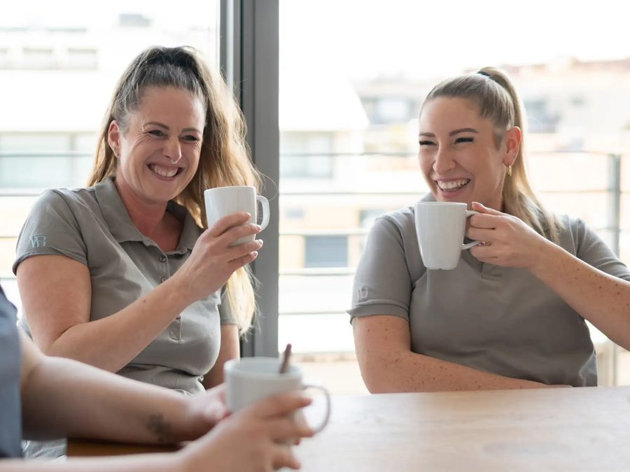
Team-Spirit
Gemeinschaft und familiärer Zusammenhalt anstelle von Streitigkeiten. Gemeinsam sind wir stark und schätzen das Teamgefühl.
Starte Deine Karriere bei WHITEBLICK. Wir suchen Dich als Teammitglied für unsere Praxis für Zahnheilkunde und Oralchirurgie!
Zu den Stellenangeboten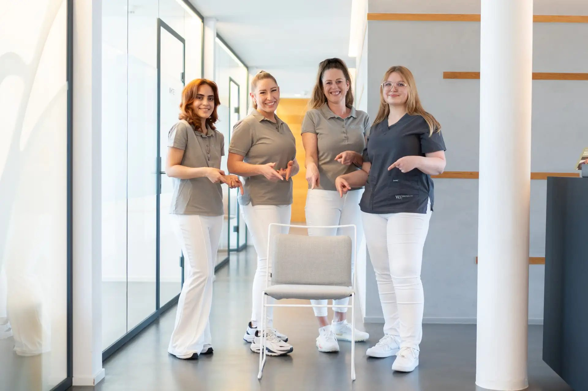
Du befindest Dich auf der Karriereseite von WHITEBLICK, der Zahnarztpraxis für Zahnheilkunde und Oralchirurgie!
Unsere Panoramapraxis befindet sich im Herzen von Stuttgart. Unsere top-moderne Praxis ist mit neuester Technologie ausgestattet und schafft durch seine lichtdurchfluteten Räumlichkeiten eine Wohlfühlatmosphäre für Team und Patienten.
Wir arbeiten zukunftsorientiert und legen großen Wert auf Transparenz und fachliche Expertise. Ein hoher Qualitätsanspruch an uns selbst ist unser täglicher Maßstab, um unseren Patienten die bestmögliche Versorgung bieten zu können.
Unsere Praxis hat nicht nur eine erstklassige zahnärztliche Versorgung zu bieten, sondern auch einen atemberaubenden WHITEBLICK über die Dächer der Stadt.
Zu den StellenChaos im Job?
Nicht bei uns! Unsere Abläufe sind gut strukturiert, sodass wir effizient zusammenarbeiten können. Bei uns gibt es keine Langeweile und keinen Raum für eintönige Aufgaben. Wir sind mit Herzblut und Leidenschaft bei der Sache.
Aufrechte Wertschätzung von Team und Chef kommen bei uns für gute Arbeit nie zu kurz. Bei uns wird jedes Engagement gesehen und geschätzt! Wir leben ein starkes Wir-Gefühl und pflegen ein familiäres Miteinander. Zickereien sind uns fremd, stattdessen stärken wir uns gegenseitig und feiern Erfolge gemeinsam als Team.
Berufliche Perspektiven und Spaß an der Arbeit stehen bei uns immer an erster Stelle. Bist Du bereit für ein dynamisches und motiviertes Team, in dem Eintönigkeit nicht existiert? Dann freuen wir uns auf Dich!
Zu den Stellen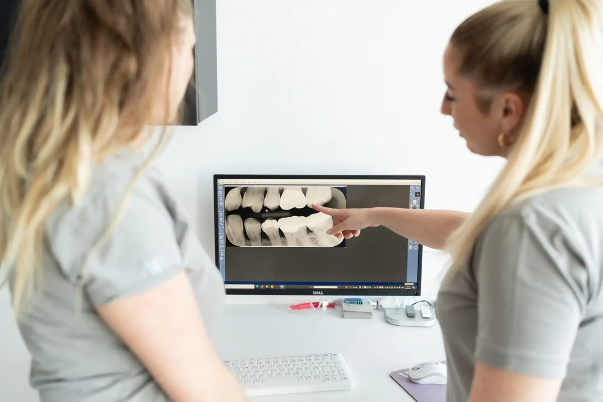
Faire und attraktive Vergütung. Heute und in der Zukunft
Ob Jobticket, Fahrtkostenzuschüsse oder Tankgutscheine? Du hast die Wahl
Entspannter arbeiten, während die Kinder gut aufgehoben sind
Durch unser Urlaubsmodell kommst Du immer zur Ruhe
Regelmäßige Teamevents und gemeinsame Aktivitäten runden unser Portfolio ab
Für Wasser, Süßgetränke, Obst, Süßigkeiten und Kaffee ist gesorgt
Vollzeit, Teilzeit, Berufseinsteiger und Wiedereinsteiger sind willkommen
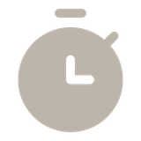
Freitags darfst Du bei uns bereits um 14 Uhr ins Wochenende starten
Weitere Benefits kannst Du den jeweiligen Stellenanzeigen entnehmen.
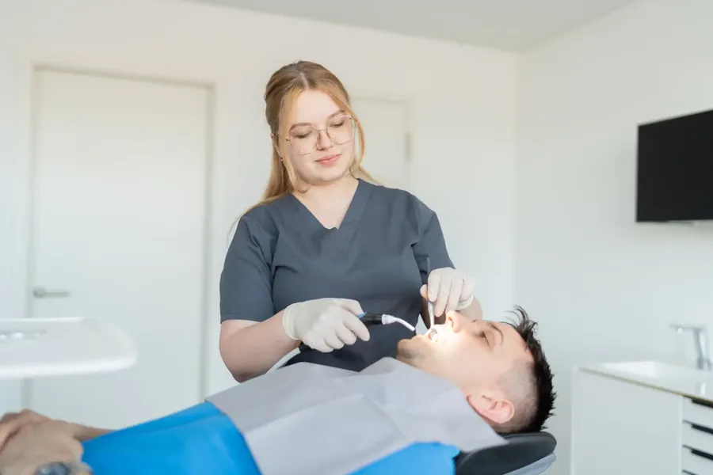
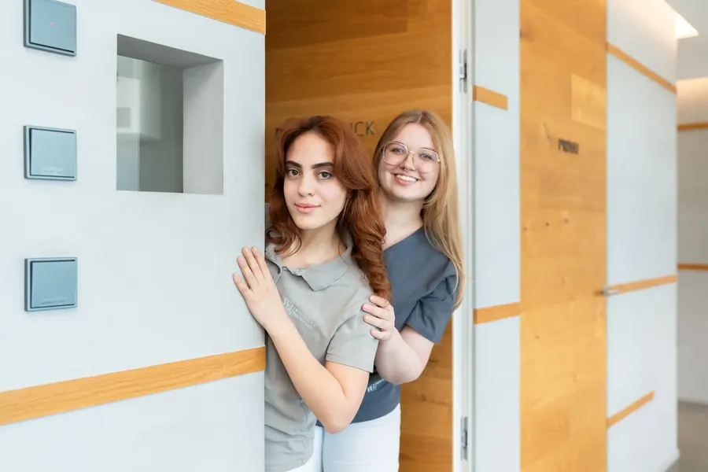
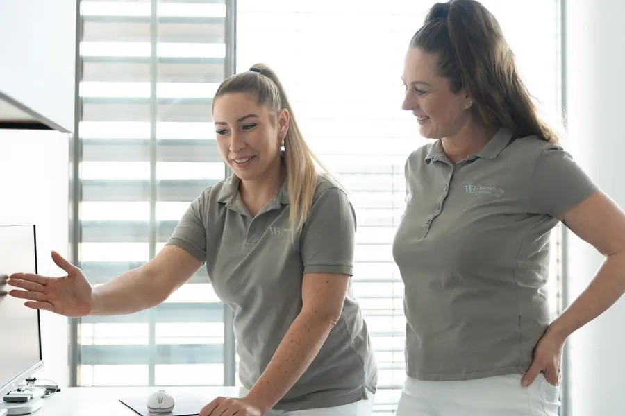
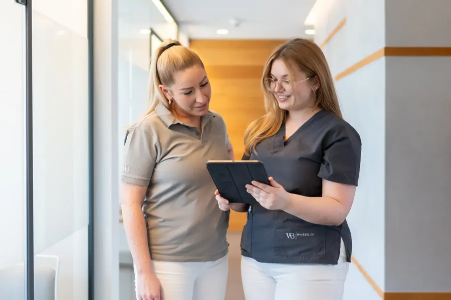
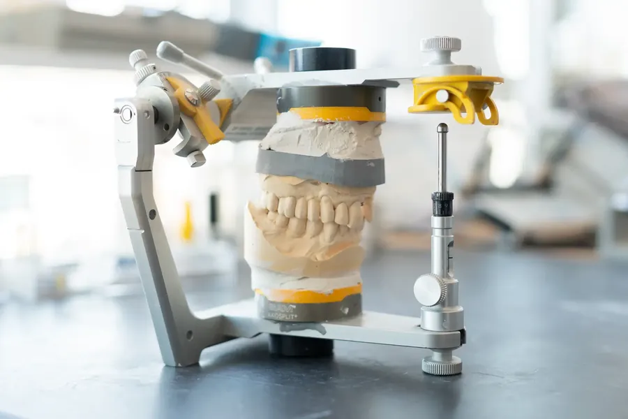
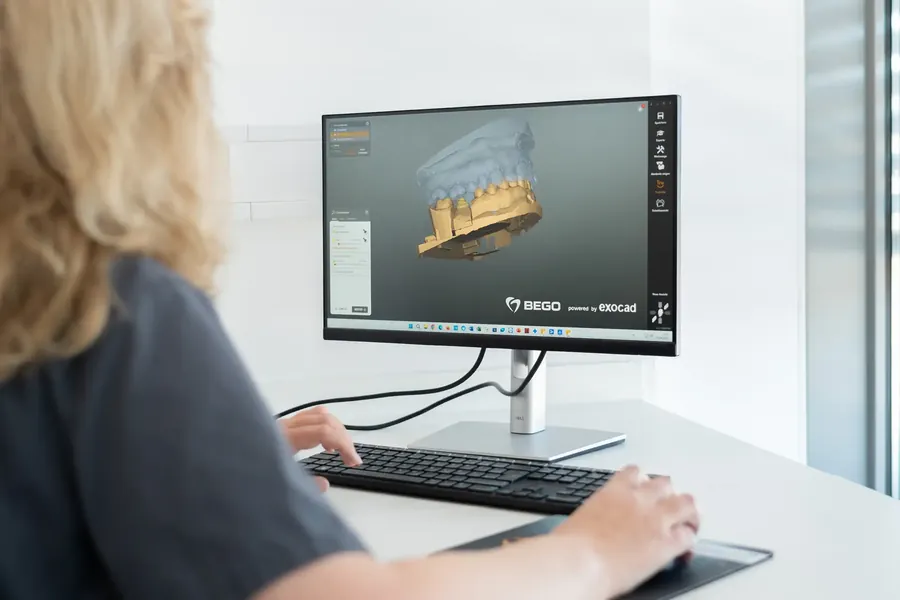
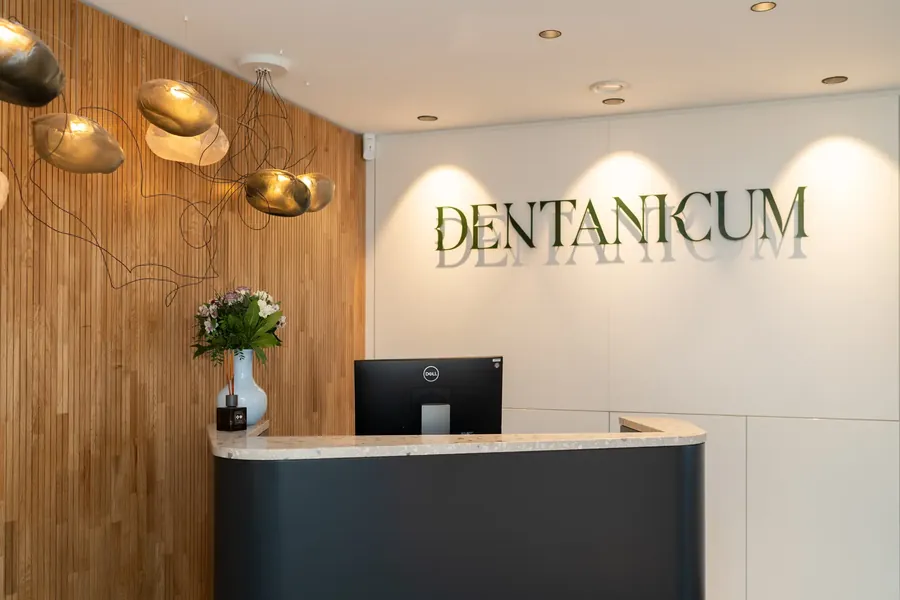
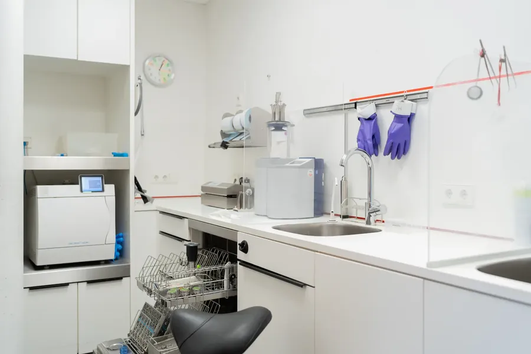
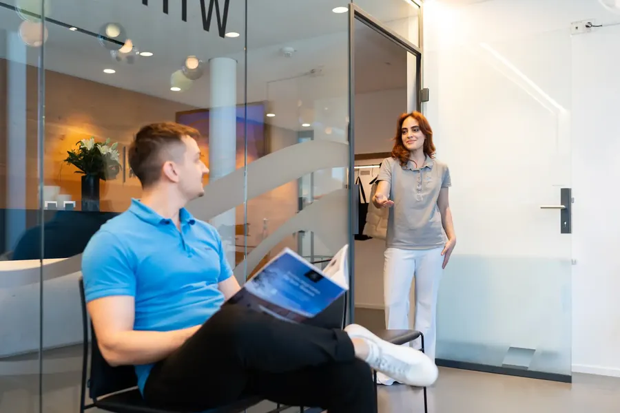
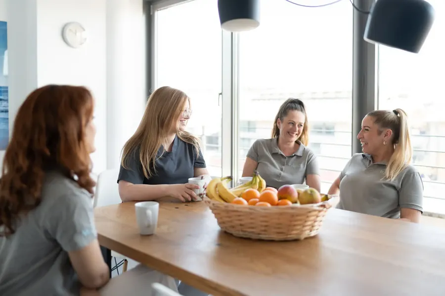
Wir suchen ZFA, ZMP, ZMF, DH, ZMV und Auszubildende für unsere Praxis für Zahnheilkunde und Oralchirurgie in der Silberburgstraße in Stuttgart-West.
Nichts Passendes dabei? Initiativbewerbungen sind jederzeit willkommen: jobs@whiteblick.de

Gemeinschaft und familiärer Zusammenhalt anstelle von Streitigkeiten. Gemeinsam sind wir stark und schätzen das Teamgefühl.
Flexible Arbeitszeiten schaffen mehr Freizeit, damit Du wertvolle Momente mit Freunden und Familie genießen kannst.
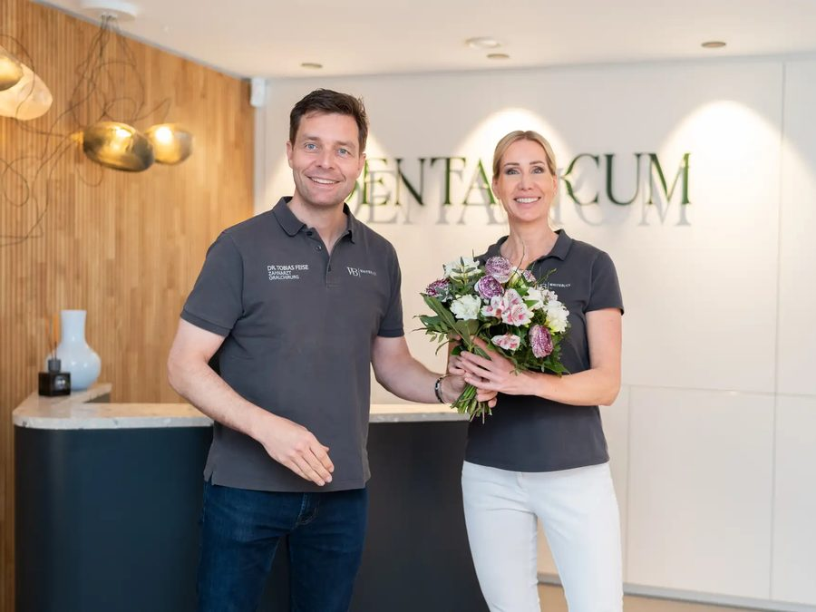
Vielfältige Karrierechancen und Freude an der Arbeit anstelle von Monotonie und eintönigen Tätigkeiten.
Dr. Tobias Feise
Zahnarzt | Fachzahnarzt für Oralchirurgie
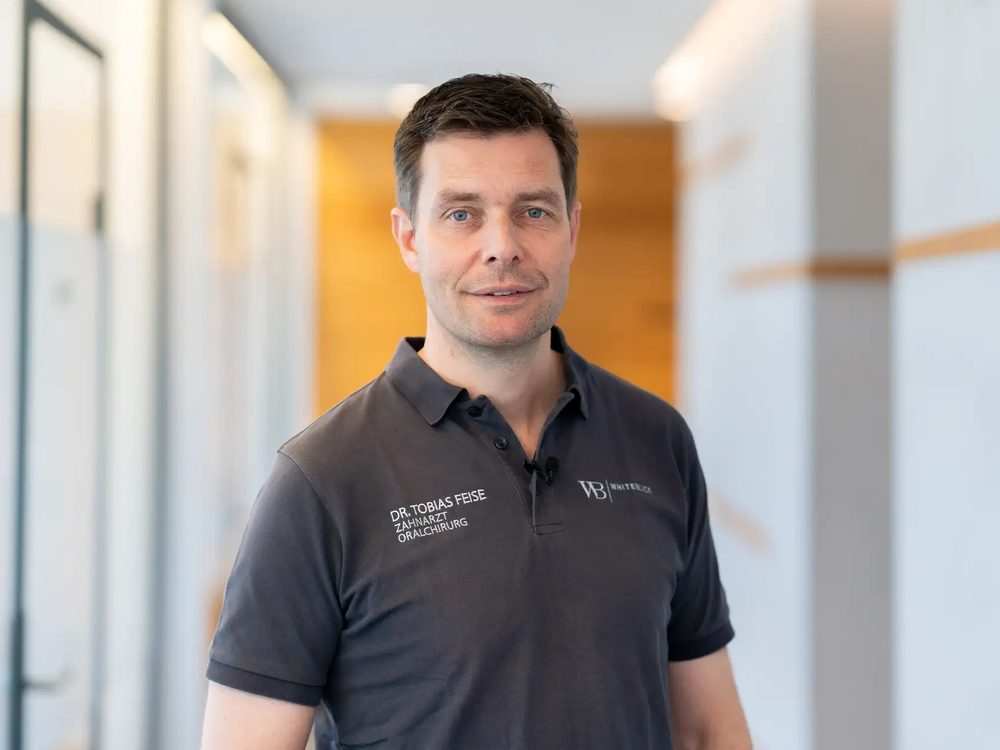
Wir denken, dass das Bewerben einfach sein sollte. Da zu einer Bewerbung viel gehört, haben wir die wichtigsten Informationen rund um die Bewerbung und unseren Prozess zusammengetragen.
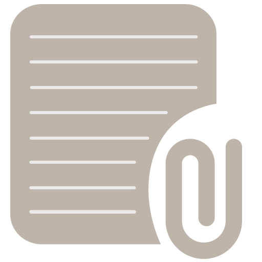
Für den Erstkontakt sind keine Unterlagen notwendig, Du kannst Dich ganz formlos bewerben. Deine Unterlagen werden erst im Anschluss benötigt.
Bitte überprüfe vor dem Absenden der Bewerbung unbedingt Deine Kontaktdaten, insbesondere die Telefonnummer, auf Vollständigkeit und Richtigkeit.
Verzichte auf ein ausführliches Anschreiben. Schreib uns stattdessen kurz in einer E-Mail, wer Du bist, was Dich auszeichnet und was Deine Motivation ist. Du kannst auch das Textfeld in der jeweiligen Stellenanzeige nutzen.
Dein Lebenslauf muss nicht perfekt oder zu 100 % vollständig und aktuell sein. Wir möchten einfach einen ersten Eindruck gewinnen.
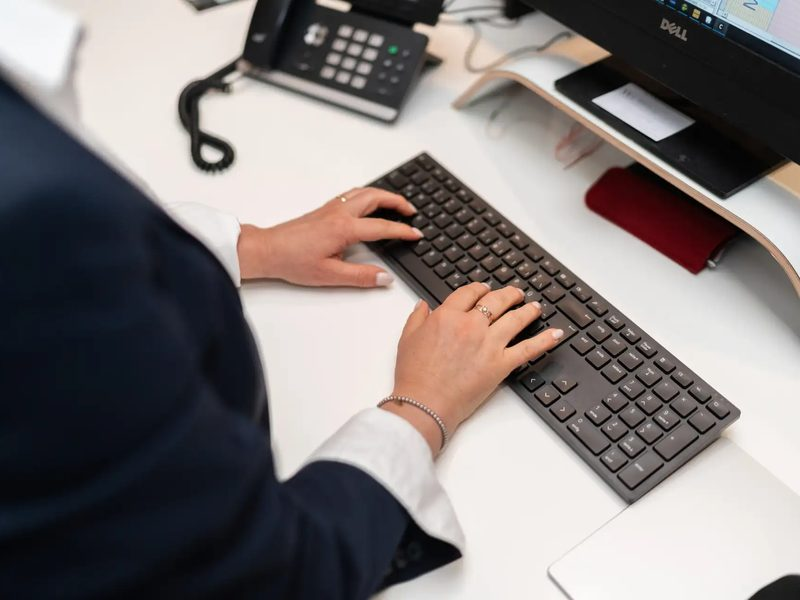
Nachdem wir Deine Bewerbung erhalten haben, starten wir den Unterlagencheck und melden uns in kurzer Zeit bei Dir.
Im zweiten Schritt verabreden wir uns für ein 15-minütiges Telefonat, wahlweise kann dieses auch via Zoom geführt werden.
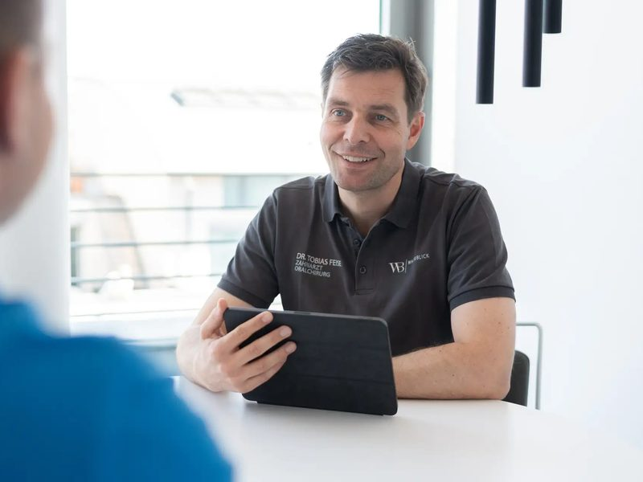
Im Nachgang terminieren wir ein persönliches Kennenlernen in unserer Praxis und schauen, ob wir zusammenpassen.
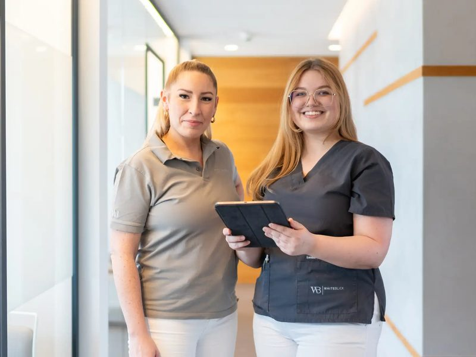
In unserer Praxis hast Du die Möglichkeit, Dir einen besseren Eindruck von unserem Team und unserer Arbeit zu verschaffen.
Du kannst Dich auch jederzeit initiativ bei uns bewerben. Wir lassen uns gerne von Deinen Fähigkeiten überzeugen.
Unsere Webseite ist immer auf dem neusten Stand, daher sind alle ausgeschriebenen Stellen aktuell.
Der Startzeitpunkt ist in der Stellenausschreibung festgehalten, sollten sich diese ändern, passen wir diese entsprechend an.
Die Daten werden bei uns nur hausintern verarbeitet und nicht an Dritte weitergegeben. Gerne können wir diese auf Wunsch löschen oder für spätere Verfahren berücksichtigen.
Wir schätzen engagierte und motivierte Teamkollegen sehr, daher ist eine Übernahme möglich.
In der jeweiligen Stellenanzeige findest Du ein Bewerbungsformular. Alternativ auch via E-Mail oder über den Postweg.
Grundsätzlich legen wir keinen großen Wert auf Noten, viel wichtiger ist uns die Person hinter der Bewerbung.
Dann melde Dich einfach bei uns. Wir helfen Dir gerne weiter und freuen uns anschließend auf Deine Bewerbung.
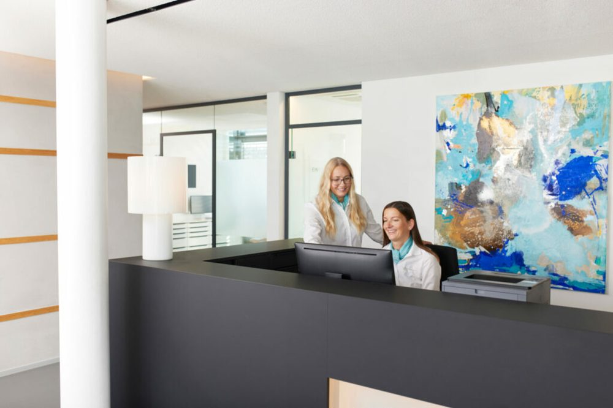